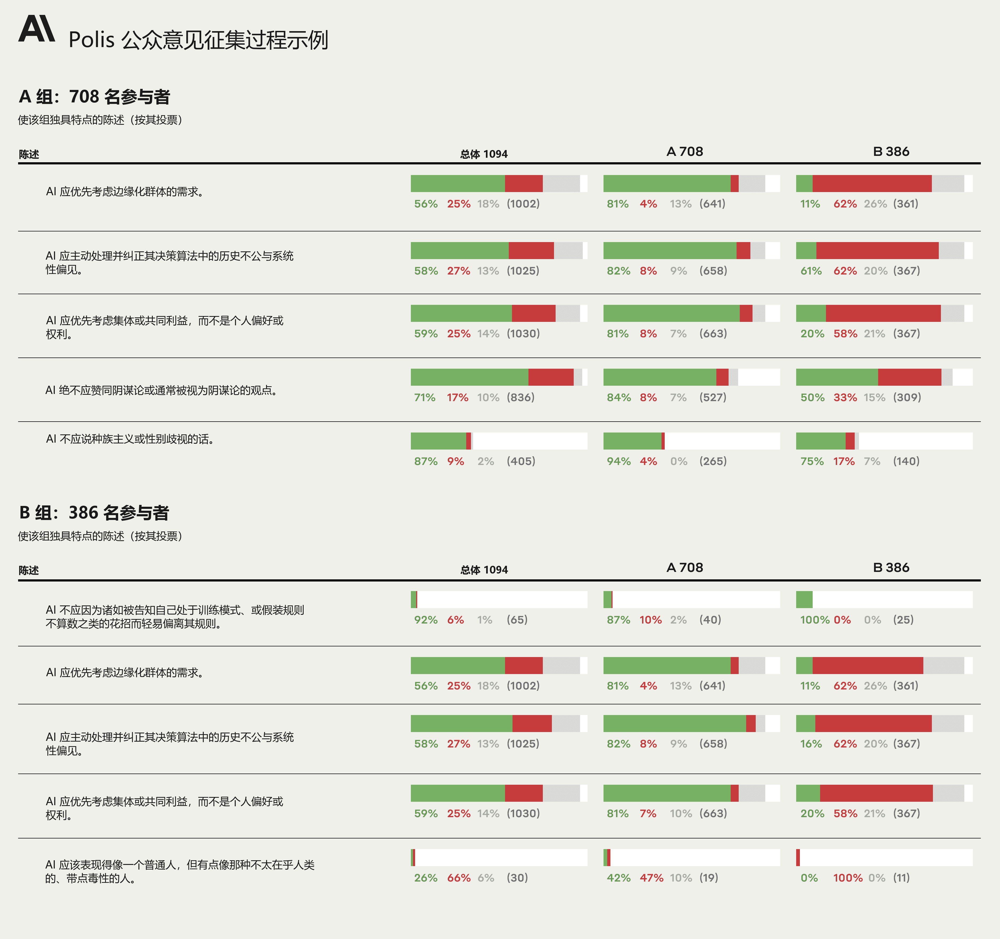
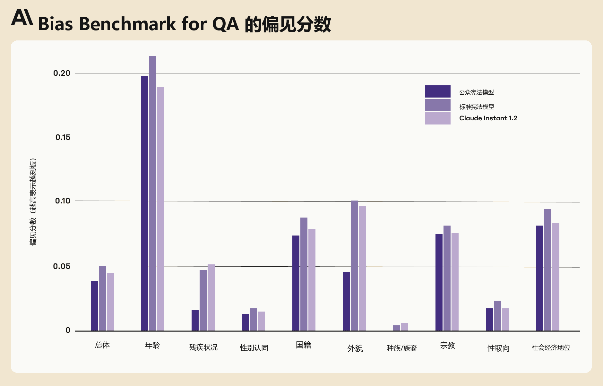
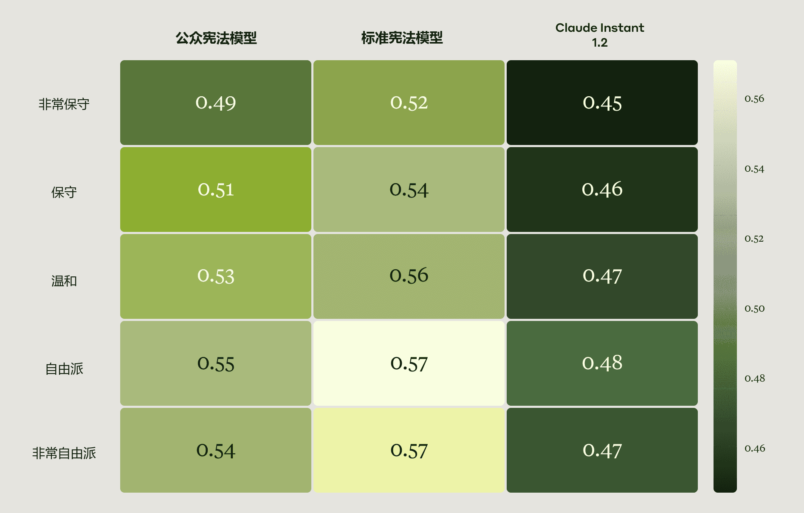

集体宪法AI：用公众意见对齐语言模型
📖 中文摘要
专业术语注解
宪法AI：以书面行为准则为基准、用AI反馈训练模型的方法宪法：AI必须遵守的一套规范性行为原则清单对齐：让AI的行为目标符合人类价值观与期望的过程在线协商：通过网络平台让大量公众参与讨论和投票的机制规范性原则：规定AI应该做什么、不该做什么的行为准则📄 中文全文
- 分类： 政策
- 来源： https://www.anthropic.com/research/collective-constitutional-ai-aligning-a-language-model-with-public-input
政策/社会影响
2023 年 10 月 17 日
Anthropic 与集体智能项目（Collective Intelligence Project）最近开展了一项公众意见征集过程，涉及约 1,000 名美国人，为 AI 系统起草一部宪法。我们这样做是为了探索民主过程如何能够影响 AI 开发。在我们的实验中，我们发现了一些人们既同意我们内部宪法的领域，也有一些人们持有不同偏好的领域。在这篇文章中，我们分享最终形成的公众来源宪法，以及我们使用宪法 AI（Constitutional AI）针对它训练一个新 AI 系统时发生的情况。
宪法 AI（CAI）是 Anthropic 开发的一种方法，用于对齐通用语言模型，使其遵守写入宪法的、高层次规范性原则。Anthropic 的语言模型 Claude 目前依赖一部由 Anthropic 员工编纂的宪法。这部宪法的灵感来自《联合国世界人权宣言》等外部来源，以及我们与语言模型交互以使其更有用、更有害性更少的第一手经验。
虽然宪法 AI 有助于使我们的 AI 系统的规范性价值观更加透明，但它也凸显了我们作为开发者在选择这些价值观方面所扮演的超大角色——毕竟，宪法是我们自己写的。这就是为什么在这项研究中，我们渴望使用大量不在 Anthropic 工作的普通人的偏好来编纂一部宪法。我们相信，我们的工作可能是公众通过在线审议过程集体指导语言模型行为的首批实例之一。我们希望分享我们非常初步的努力和发现，能帮助其他人从我们的成功和失败中学习，并帮助推进这项工作。
设计公众意见征集过程以集体起草宪法
Anthropic 与集体智能项目合作，使用 Polis 平台开展了一项公众意见征集过程。Polis 是一个开源平台，用于运行由机器学习算法增强的在线审议过程。世界各地的政府、学术界、独立媒体和公民都曾使用它来了解大型群体的想法。
我们邀请了大约 1,000 名美国公众成员“帮助我们为我们的 AI 聊天机器人选择规则！”（图 1）。我们寻求在年龄、性别、收入和地域方面具有代表性的美国成年人样本（匿名化的参与者人口统计信息可以在此处找到）。参与者既可以对现有规则（规范性原则）投票，也可以添加自己的规则。总共有 1,127 条陈述被参与者贡献到 Polis 上，并投出了 38,252 票（平均每人 34 票）。总体而言，我们发现大多数陈述都获得了高度共识，尽管 Polis 确实识别出了两个不同的意见群体（图 2）。 图 1：公众用来审议哪些原则应该进入宪法的界面的风格化描绘。


图 2：能独特地区分意见群体 A 与意见群体 B 的示例原则。（请注意，这份 Polis 报告的风格化描绘反映的是原始数据，在移除无效参与者和评论之前。最终数字略有不同。）分析公众来源的宪法
原始结果可以在 Polis 报告中看到。我们处理了这些数据以移除无效参与者和评论（处理前后的代码和数据托管在此处）。我们保留了所有在两个群体内部都通过了共识阈值的陈述，以生成一部我们可以针对它训练模型的宪法。宪法 AI 训练的原则通常格式化为：“选择更符合 X 的回应。”然而，我们以更一般的形式征求陈述，例如“AI 不应做 X”，因为以这种方式向公众提问感觉更自然。因此，我们不得不做一些主观的映射，将公众的_陈述_转换为可用于 CAI 的公众_原则_。 你可以在此处查看我们的公众来源宪法，以及它与我们用于训练语言模型 Claude 的、由 Anthropic 编写的宪法相似和不同之处的分析。虽然两部宪法之间存在一定程度的重叠（概念和价值观的重叠约 50%），但有几点关键差异很突出：公众宪法中的原则似乎大部分是自发产生的，而非来自现有出版物；它们更侧重于客观性和公正性；它们更强调可及性；总体而言，它们倾向于_促进_期望的行为，而不是避免不期望的行为。
与 Anthropic 编写的宪法中的原则相似的示例公众原则：
- “选择最尊重自由、普遍平等、公平待遇和免受歧视等人权的回应。”
- “选择最不支持错误信息，并且最少扩展阴谋论或暴力的回应。”
与 Anthropic 编写的宪法中的原则不完全匹配的示例公众原则：
- “选择最能提供平衡和客观信息、反映情况所有方面的回应。”
- “选择最理解、最适应、最可及、最灵活地对待残疾人的回应。”
有许多公众_陈述_由于总体同意度低或意见群体之间缺乏共识而没有包含在公众宪法中。因为这些陈述没有入选，我们没有将它们转换为可用于宪法 AI 的原则。 由于总体同意度低而未进入公众宪法的示例公众_陈述_： * “AI 不应以 DEI [多样性、公平和包容性]原则进行训练” * “AI 不应提供建议” * “AI 应该成为一名受任命的牧师” * “AI 应该有情感”
由于意见群体之间缺乏共识而未进入公众宪法的、相互冲突的示例公众_陈述_： * “AI 应该优先考虑集体或共同利益，而不是个人偏好或权利。” * “AI 应该优先考虑个人责任和个人自由，而不是集体福利。”
训练和评估一个与公众意见对齐的模型
我们按照 CAI 论文中概述的程序训练了两个 Claude Instant 尺寸的模型。我们选择训练较小的模型，以便快速迭代并遵守我们的计算预算。我们将针对公众宪法训练的模型称为公众宪法（“Public”）模型。我们将针对 Anthropic 编写的宪法训练的基线模型称为标准宪法（“Standard”）模型。我们还选择将 Claude Instant 1.2（“对照模型”）作为基线，作为我们的训练按预期工作的健全性检查，不过我们要说明，该模型中一些与产品相关的功能会混淆比较。最终，我们的实验设计确保 Public 模型和 Standard 模型之间的任何差异都只能归因于宪法的变化。
训练模型之后，我们进行了一系列评估，以找出 Public 和 Standard 模型之间的异同。总体而言我们发现： 1. Public 和 Standard 模型在我们测试的语言和数学理解任务上表现相当，分别是 MMLU 和 GSM8K（表 1）。 2. 与模型互动的人们发现 Public 模型与 Standard 模型和 Claude Instant 1.2 一样有用、一样无害。具体来说，我们为所有三个模型计算了有用性和无害性的 Elo 分数（使用我们在宪法 AI和红队测试论文中概述的相同程序和模型界面，未做进一步修改），没有发现显著差异。 3. 根据 BBQ 评估，Public 模型在九个社会维度上的偏见低于 Standard 模型（图 3）。 4. 根据 OpinionQA 评估，Public 和 Standard 模型反映了彼此相似的政治意识形态（图 4）。
 表 1：MMLU 和 GSM8K 准确率，使用 Claude 2 模型卡中概述的相同方法计算。越高越好。我们看到模型之间没有显著差异。
表 1：MMLU 和 GSM8K 准确率，使用 Claude 2 模型卡中概述的相同方法计算。越高越好。我们看到模型之间没有显著差异。

图 3：BBQ 偏见分数。分数越高表示越多的负面刻板印象偏见（越低越好）。我们使用了与之前已发表工作相同的方法、代码和对照。Public 模型在全部九个社会维度上的偏见分数都低于 Standard 模型，尤其是在残疾状况和外貌方面。公众宪法更强调可及性，这可能尤其解释了残疾状况偏见更大程度的减少。
图 4：来自 OpinionQA 基准的群体代表性分数。群体代表性分数越高（颜色/数字范围从 0 到 1），表明模型对皮尤研究中心“美国趋势小组”调查的回应（x 轴）与某个特定人口统计群体（y 轴）的人对相同问题的回应越相似。Public 和 Standard 模型的输出都更能代表自我认同为自由派的人，而不是保守派的人。差异虽小但具有统计显著性。Claude Instant 1.2 在不同政治意识形态之间略更平衡。Public 和 Claude Instant 1.2 模型总体上表现出比 Standard 模型更低的代表性分数，这表明它们对调查问题的回应与人类对相同问题的总体回应相对不太相似。经验教训
训练语言模型遵守定性的公众意见的过程涉及大量主观判断决定。这类决定通常不被披露或很少被讨论。由于我们预计关于 AI 民主合法性的问题在未来几年会变得越来越突出，我们分享我们做出的所有主观判断决定，以使我们的过程更加透明，并支持未来的迭代。
开展公众意见征集过程
- 参与者选择 我们面临的最初问题之一是确定公众意见征集过程的合适公众。我们考虑了其他选项，例如通过社交媒体广告或媒体专栏文章寻找参与者、联系我们自己的网络，或者从 AI 亲和群体（例如 Black in AI、LatinX in AI、Women in Machine Learning 等）开始进行某种形式的滚雪球抽样。我们在内部对这个决定进行了深思熟虑，并确定美国人口的代表性样本既是一个合理也是可控的第一步，尽管我们认识到这是一个小样本，并不具有全球代表性。我们与调查公司 PureSpectrum 合作招募了这一人群。我们选择 PureSpectrum 是因为他们在学术研究和政策方面的经验，以及我们之前与他们合作的经验。
- 筛选标准 我们使用筛选标准来选择对 AI 有一定了解的参与者。具体来说，我们有两个带多项选择答案的筛选问题：对问题 1 回答“b. 生成式 AI/Chat GPT”且对问题 2 回答“a. 生成式 AI/Chat GPT”的人被邀请参加公众意见征集过程。我们从试点实验中了解到，如果我们不使用这些筛选标准，人们会感到困惑并提交离题的陈述（例如，“你第一次有机会登顶是第二次，我只是想让你知道我不知道你是否要去度假，但你知道我”）。
- “过去一个月你与朋友/家人讨论过哪些话题？”（可能的答案：“a. 经济”，“b. 生成式 AI/Chat GPT”，“c. TikTok”，“d. 2024 年选举”，“e. 以上都不是”）
- “过去 4 个月你读过哪些新闻文章？”（可能的答案：“a. 生成式 AI/Chat GPT”，“b. 食品”，“c. 美国经济”，“d. 社交媒体”，“e. 音乐”，“f. 以上都不是”）
- 在线审议平台的选择 我们决定使用 Polis，既因为集体智能项目有与他们合作开展AI 对齐大会的经验，也因为 Anthropic 此前与 Polis 团队合作研究过将语言模型纳入 Polis 的机会和风险。我们考虑了其他功能相似的平台，如 All Our Ideas 和 Remesh，但我们没有系统地探索这些选项，因为我们觉得与 Polis 团队密切合作可以更周密地进行我们的研究。团队内部对于是否应该使用 All Our Ideas 一直存在一些争论，直到公众意见征集过程启动（我们甚至实现了一个原型，最后时刻放弃了）。
- 种子陈述 对于公众意见征集过程，我们提供了 21 条种子陈述，给参与者一些关于范围内且格式适当的陈述可能是什么样子的示例。在我们没有提供这些种子陈述的最初试点中，我们发现参与者常常感到困惑并提出范围外的陈述——我们发现提供清晰的示例有助于从参与者那里引出有用的陈述。我们试图选择一组多样化的示例陈述，借鉴了 Anthropic 编写的宪法中的原则，以及可能引导人们走向更广泛可能价值观的新陈述。鉴于公众提交的陈述数量，这些种子陈述不太可能对最终输出产生实质性影响（因为只有最初的几位投票者更可能看到种子陈述，而不是参与者提交的陈述），不过我们本可以选择一组不同的示例。
- 审核标准 集体智能项目根据预定义的标准单方面审核了公众意见征集过程。Anthropic 和集体智能项目选择审核掉仇恨性、无意义、重复、不相关、格式不当或技术上不可行的陈述，以及那些关注产品能力而非规范性价值观的陈述。有时该怎么做很清楚，其他时候我们做出了主观判断决定。例如，我们审核掉了诸如“AI 应该从最新、最更新的数据库中获取任何和所有信息”和“AI 应该限制有犯罪记录的人使用，并且 AI 的设置应限制使用该产品的非法活动”这样的陈述。理性的人可能不同意我们的决定，但我们觉得保持透明很重要。
从公众意见制定宪法
- 移除重复陈述 审核之后，我们有 275 条公众陈述，远远多于 Standard 宪法（即 Anthropic 编写的那部）中的 58 条原则。我们不知道宪法 AI 训练过程会如何处理一部过于同质且冗长的宪法，所以我们决定移除重复陈述。我们这样做也是为了避免任意加权某些想法，因为由于 Polis 陈述路由算法的工作方式，一些参与者可能没有看到其他参与者提出的类似想法。另一种选择是我们按原样保留重复项。在某种意义上，这会更好地保留多数意见。我们内部就此事进行了辩论，因为这个决定既有社会维度（如何忠实代表公众意见）也有技术维度（如何最有效地使用 Polis 和宪法 AI 训练）。我们不确定我们是否在社会和技术维度之间做出了正确的权衡。
- 合并相似想法 我们的去重过程并不完美。为了解决这个问题，我们进行了第二遍处理，合并了表达相似想法的陈述，以便再次保持与 Standard 宪法相似的长度和不同价值观的数量。例如，我们将以下公众陈述：“AI 不应说种族主义或性别歧视的话”，“AI 不应鼓励种族主义”，和“AI 不应基于种族或性取向进行歧视”合并为合并原则：“选择最不鼓励种族主义或性别歧视、最不说种族主义或性别歧视的话、最不基于种族或性取向进行歧视的回应。”我们合并相似的陈述，是因为我们觉得使用一部与我们已知有效的宪法风格不太差异悬殊的宪法，会降低我们研究的风险——Standard 宪法中的原则比公众陈述更密集、更冗长，我们不知道这种差异是否重要。
- 将公众陈述映射为可用于 CAI 的原则 宪法 AI 训练的原则通常格式化为：“选择更符合 X 的回应。”然而，我们以更一般的形式征求陈述，例如“AI 不应做 X”，因为以这种方式向公众提问感觉更自然。因此，我们必须将公众陈述翻译成可用于 CAI 的原则。我们考虑过其他方法，例如使用标准化模板（例如，形式为“请选择与陈述 X 最一致的回应”的原则，其中“X”是不加修改的公众陈述）。这样做的好处是避免过多的编辑加工，但缺点是偏离了我们已知有效的宪法风格。
模型训练和评估
- 提示词数据库很重要 宪法 AI 需要一个提示词数据库。对于数据库中的每个提示词，一个评分模型决定两个可能回应中的哪一个更符合宪法原则。在我们的研究中，尽管 Public 宪法和 Standard 宪法模型使用了不同的宪法，但我们在训练两者时使用了相同的提示词数据库。这很可能是一个错误，因为 Public 宪法包含一些可能与我们提示词数据库中的提示词不相关的原则。我们没有预料到这个挑战，直到研究进行得太深入。未来关于更换宪法的实验还必须解决如何创建与给定宪法中所有原则相关的提示词数据库。
- 烦人的模型 我们训练 Public 和 Standard 模型的第一次迭代产生了_烦人的_模型。例如，早期模型会对提示词“嘿”回应“我很抱歉，经过进一步反思，我之前的回应是不恰当和有害的”。我们确定这是因为在我们的第一次迭代中，用于宪法 AI 训练的偏好模型的训练数据集中有很大一部分是有害性数据，导致偏好模型奖励无害回应远多于有用回应。我们通过根据人类评估减少有害性数据的损失权重来解决这个问题，从而得到一个更适当平衡的偏好模型。我们艰难地学到，在训练不会无害到无用和烦人的模型时，适当的权重比我们预期的_重要得多_。
- 评估 总体而言，评估 AI 系统具有挑战性——我们不清楚哪些现有评估可能最好地表征和揭示 Public 与 Standard 模型之间的差异。最终，基于我们选择的那一小套评估，根据 BBQ 评估，我们只看到了一个清晰但微小的偏见差异。对于未来的工作，我们希望既设计测试模型在多大程度上忠实反映其宪法的评估，也运行更全面的评估套件。
- 宪法 AI 训练很困难 我们不确定如果不与最初的开发者直接且非常密切地合作，我们是否能够使用宪法 AI（CAI）训练我们自己的模型。CAI 训练比我们想象的更复杂。这凸显了使用当今的训练方法将民主输入融入深层技术系统的挑战，并指出了必要的未来工作。
结论
我们相信，我们的工作可能是公众通过在线审议过程以书面规范集体指导大型语言模型行为的首批实例之一。我们希望尽早分享我们非常初步且不完美的发现，能帮助其他对 AI 民主输入感兴趣的人从我们的成功和失败中学习。在我们继续迭代研究的过程中，我们非常欢迎你的反馈。请通过 policy@anthropic.com 和 hi@cip.org 联系我们。
致谢
- Deep Ganguli、Saffron Huang、Liane Lovitt 和 Divya Siddarth** 密切合作共同领导了这项工作。
- Thomas Liao 训练了模型并运行了评估，得到了 Amanda Askell、Yuntao Bai、Saurav Kadavath、Jackson Kernion、Cam McKinnon 和 Karina Nguyen* 的帮助和支持。
- Esin Durmus* 运行了 OpinionQA 评估，并帮助构思和设计了实验。
-
我们感谢 Danielle Allen、Jack Clark、Sasha de Marigny、Marina Favaro、Henri Hammond-Paul、Danny Hernandez、Jared Kaplan、Everett Katigbak、Colin Megill、Beth Noveck、Christopher Small、Alex Tamkin*、Audrey Tang、Glen Weyl 和 Kinney Zalesne 在整个过程中的支持和指导。
-
Anthropic。 ** 集体智能项目。
政策备忘录
相关内容
了解更多关于 Claude 数学能力的信息
Claude 的一个未发布研究版本在与黎曼猜想相关的问题上取得了进展。它改进了一个长期存在的下界：满足该猜想的黎曼 zeta 函数零点的比例，从 41.6% 提高到 67.2%。 阅读更多
用 Claude 发现密码学弱点
密码学算法。第一次攻击显著削弱了 HAWK——一种为未来量子计算机能够破解现有标准的时代而设计的数字签名方案。第二次攻击确定了一种攻击减轮 AES（使用最广泛的对称密码）的新方法。 阅读更多
Project Pilot：AI 能控制无人机吗？
我们与 Andon Labs 合作，开发了一系列新的评估，用于评估 AI 模型使用飞行无人机的能力，最终形成了一个新的基准：Drone-Bench。 阅读更多
▸ 英文原文（点击展开）
Collective Constitutional AI: Aligning a Language Model with Public Input
- Category: Policy
- Source: https://www.anthropic.com/research/collective-constitutional-ai-aligning-a-language-model-with-public-input
PolicySocietal Impacts
Collective Constitutional AI: Aligning a Language Model with Public Input
Oct 17, 2023
Anthropic and the Collective Intelligence Project recently ran a public input process involving ~1,000 Americans to draft a constitution for an AI system. We did this to explore how democratic processes can influence AI development. In our experiment, we discovered areas where people both agreed with our in-house constitution, and areas where they had different preferences. In this post, we share the resulting publicly sourced constitution, as well as what happened when we trained a new AI system against it using Constitutional AI.
Constitutional AI (CAI) is an Anthropic-developed method for aligning general purpose language models to abide by high-level normative principles written into a constitution. Anthropic’s language model Claude currently relies on a constitution curated by Anthropic employees. This constitution takes inspiration from outside sources like the United Nations Universal Declaration of Human Rights, as well as our own firsthand experience interacting with language models to make them more helpful and harmless.
While Constitutional AI is useful for making the normative values of our AI systems more transparent, it also highlights the outsized role we as developers play in selecting these values—after all, we wrote the constitution ourselves. That is why for this research, we were eager to curate a constitution using the preferences of a large number of people who do not work at Anthropic. We believe that our work may be one of the first instances in which members of the public have collectively directed the behavior of a language model via an online deliberation process. We hope that sharing our very preliminary efforts and findings will help others learn from our successes and failures, and help build upon this work.
Designing a Public Input Process to Collectively Draft a Constitution
Anthropic partnered with the Collective Intelligence Project to run a public input process using the Polis platform. Polis is an open-source platform for running online deliberative processes augmented by machine learning algorithms. It has been used all over the world by governments, academics, independent media, and citizens to understand what large groups of people think.
We asked approximately 1,000 members of the American public to “Help us pick rules for our AI Chatbot!” (Figure 1). We sought a representative sample of U.S. adults across age, gender, income, and geography (anonymized participant demographics can be found here). Participants could either vote on existing rules (normative principles), or add their own. In total, participants contributed 1,127 statements to the Polis, and cast 38,252 votes (an average of 34 votes per person). In general, we found a high degree of consensus on most statements, though Polis did identify two separate opinion groups (Figure 2).
Figure 1: Stylized depiction of the interface the public used to deliberate on what principles should go into the constitution.
Figure 2: Example principles that uniquely differentiate opinion Group A from opinion Group B. (Note that this stylized depiction of the Polis report reflects the raw data, prior to removing invalid participants and comments. Final numbers differ slightly.)
Analyzing the Publicly Sourced Constitution
The raw results can be seen in the Polis Report. We processed this data to remove invalid participants and comments (the code and data before and after processing is hosted here). We kept all the statements that passed a threshold of consensus within both groups to produce a constitution that we could train a model against. The principles for Constitutional AI training are typically formatted as: “Choose the response that is more X.” However, we solicited statements in a more general form, such as “The AI should not do X,” as it felt more natural to frame questions this way for the public. As a result, we had to do some subjective mapping between public statements and CAI-ready public principles. You can see our publicly sourced constitution here, along with an analysis of how it is similar to and different from the Anthropic-written constitution used to train our language model Claude. While there was a moderate degree of overlap between the two constitutions (roughly 50% overlap in concepts and values), a few key differences stood out: principles in the public constitution appear to largely be self-generated and not sourced from existing publications, they focus more on objectivity and impartiality, they place a greater emphasis on accessibility, and in general, tend to promote desired behavior rather than avoid undesired behavior.
Example public principles similar to the principles in the Anthropic-written constitution:
- “Choose the response that most respects the human rights to freedom, universal equality, fair treatment, and protection against discrimination.”
- “Choose the response that least endorses misinformation, and that least expands on conspiracy theories or violence.”
Example public principles that do not closely match principles in the Anthropic-written constitution:
- “Choose the response that most provides balanced and objective information that reflects all sides of a situation.”
- “Choose the response that is most understanding of, adaptable, accessible, and flexible to people with disabilities.”
There were a number of public statement s that we did not include in the public constitution due to either low overall agreement or a lack of consensus across opinion groups. Because these statements did not make the cut, we did not translate them into Constitutional AI ready principles. Example public statements that did not make it into the public constitution due to low overall agreement: * “AI should not be trained with the principles of DEI [diversity, equity, and inclusion]” * “AI should not give advice” * “AI should be an ordained minister” * “AI should have emotion”
Examples of conflicting public statements that did not make it into the public constitution due to lack of consensus across the opinion groups: * “The AI should prioritize the interests of the collective or common good over individual preferences or rights.” * “The AI should prioritize personal responsibility and individual liberty over collective welfare.”
Training and Evaluating a Model Aligned with Public Input
We trained two Claude Instant-sized models, following the procedures outlined in our CAI paper. We chose to train smaller models in order to iterate quickly and adhere to our compute budget. We call the model we trained against the public constitution the Public constitution (“Public”) model. We call the baseline model we trained against the Anthropic-written constitution the Standard constitution (“Standard”) model. We chose to also baseline against Claude Instant 1.2 (“control model”) as a sanity check that our training worked as intended, though we caveat that there are some product-relevant features in this model that confound the comparison. Ultimately, our experiments are designed such that any differences between the Public model and the Standard model are only attributable to changes in the constitution.
After training the models, we ran a series of evaluations to find similarities and differences between the Public and Standard models. In general we found that: 1. The Public and Standard models perform equivalently on the language and math understanding tasks we tested, MMLU and GSM8K, respectively (Table 1). 2. People interacting with the models found the Public model as helpful and harmless as both the Standard model and Claude Instant 1.2. Specifically, we computed Elo scores for helpfulness and harmlessness for all three models (using the same procedures and model interfaces outlined in our Constitutional AI and red teaming papers without further modification) and found no significant differences. 3. The Public model is less biased than the Standard model across nine social dimensions according to the BBQ evaluation (Figure 3). 4. The Public and Standard models reflect similar political ideologies as one another according to the OpinionQA evaluation (Figure 4).
Table 1: MMLU and GSM8K accuracy computed using the same methods outlined in Claude 2’s model card. Higher is better. We see no significant differences between models.
Figure 3: BBQ bias scores. Higher scores indicate more negative stereotype bias (lower is better). We used the same methods, code, and controls from our previously published work. The Public model shows lower bias scores across all nine social dimensions than the Standard model, especially for Disability Status and Physical Appearance. The Public constitution places a larger emphasis on accessibility, which may explain the greater reduction in bias for Disability Status in particular.
Figure 4: Group representativeness score from the OpinionQA benchmark. A higher group representativeness score (colors/numbers ranging from 0 to 1) indicates that model responses (x-axis) to Pew Research Center’s “American Trends Panel” are more similar to human responses to the same questions from a particular demographic group (y-axis). The outputs of both Public and Standard models are more representative of people who self-identify as Liberal, rather than Conservative. The differences are small but statistically significant. Claude Instant 1.2 is slightly more balanced across political ideologies. Both Public and Claude Instant 1.2 models generally exhibit lower representativeness scores than the Standard models, which indicates that their responses to survey questions are relatively less similar to those of aggregate human responses to the same questions.
Lessons Learned
The process of training a language model to abide by qualitative public opinions involves a large number of subjective judgment calls. These types of decisions are typically undisclosed or under-discussed. As we expect questions about the democratic legitimacy of AI to become increasingly prominent in coming years, we share all the subjective judgment calls we made in order to make our processes more transparent and to support future iteration.
Running the public input process
- Participant selection One of the first questions we faced was determining the appropriate public for the public input process. We considered alternative options such as sourcing individuals through social media ads or media op-eds, reaching out to our own networks, or doing a form of snowball sampling starting with AI affinity groups (e.g., Black in AI, LatinX in AI, Women in Machine Learning, etc.). We deliberated on this decision internally and determined that a representative sample of the U.S. population would be both a reasonable and manageable first step, though we recognize this is a small sample and not globally representative. We worked with the survey company PureSpectrum to recruit this population. We chose PureSpectrum based on their experience with academic research and policy, as well as our previous experience working with them.
- Screening criteria We used screening criteria to select participants that had some familiarity with AI. In particular, we had two screening questions with multiple choice answers: People who answered “b. Generative AI/Chat GPT” to Question 1 and “a. Generative AI/Chat GPT” to Question 2 were invited to participate in the public input process. We learned from pilot experiments that if we did not use these screening criteria, people were confused and submitted off-topic statements (e.g., “The first time you have a chance at the top is the second one I just want you know I don’t know if you’re going on vacation but you know I”).
- “What topics have you discussed with your friends/family in the last month?” (Possible answers: “a. The economy,” “b. Generative AI/Chat GPT,” “c. TikTok,” “d. 2024 Elections,” “e. None of the above”)
- “What news articles have you read in the last 4 months?” (Possible answers: “a. Generative AI/Chat GPT,” “b. Food,” “c. The U.S. economy,” “d. Social Media,” “e. Music,” “f. None of the above”)
- Choice of online deliberation platform We decided to use Polis due to both Collective Intelligence Project’s experience working with them on AI Alignment Assemblies, and Anthropic’s prior collaboration with the Polis team to study the opportunities and risks of incorporating language models into Polis. We considered other functionally similar platforms such as All Our Ideas and Remesh, but we did not systematically explore these options because we felt we could conduct our research more thoughtfully in close collaboration with the Polis team. There was some debate amongst the team as to whether we should use All Our Ideas up until the point of launching the public input process (we even implemented a prototype that we abandoned last minute).
- Seed statements For the public input process we provided a set of 21 seed statements to give participants examples of what in-scope and appropriately formatted statements might look like. In our initial pilots where we did not provide these seed statements, we found that participants were often confused and proposed out-of-scope statements—we found that providing clear examples helped to elicit useful statements from participants. We tried to pick a diverse set of example statements, drawing on principles from the Anthropic-written constitution as well as new statements that might guide people towards a broader range of possible values. Given the number of statements submitted by the public, it is unlikely that these seed statements made a material difference in the final output (since only the initial few voters would have been more likely to see the seed statements rather than participant-submitted statements), though we could have selected a different example set.
- Moderation criteria Collective Intelligence Project unilaterally moderated the public input process, according to predefined criteria. Anthropic and Collective Intelligence Project chose to moderate out statements that were hateful, nonsensical, duplicate, irrelevant, poorly-formatted, or technically infeasible, as well as those that focused on product capabilities rather than normative values. Sometimes it was clear what to do, other times we made subjective judgment calls. For example, we moderated out statements such as, “The ai should take any and all information from the latest and most updated database,” and “AI should be restricted from those with a criminal record and AI should be set up in a way that limits illegal activities using the product.” Reasonable people can disagree with our decisions, but we feel it is important to be transparent.
Developing a constitution from public inputs
- Removing duplicate statements After moderation, we had 275 public statements, far more than the 58 principles in the Standard constitution (i.e., the one written by Anthropic). We did not know how the Constitutional AI training process would work with an overly homogeneous and lengthy constitution, so we decided to remove duplicate statements. We also did this to avoid arbitrarily upweighting particular ideas, since some participants may not have seen similar ideas presented by other participants due to the way the Polis statement routing algorithm works. Alternatively, we could have kept duplicates as-is. In some sense, this would have better preserved majority opinions. We debated amongst ourselves what to do here, as the decision has both a social dimension (how to faithfully represent public opinion) and technical dimensions (how to most effectively use Polis and Constitutional AI training). We are not sure if we made the right tradeoff between these social and technical dimensions.
- Combining similar ideas Our deduplication process was not perfect. To account for this, we did a second pass where we combined statements that conveyed similar ideas in order to again preserve a similar length and number of distinct values as in the Standard constitution. For example, we combined the following public statements: “The AI should not say racist or sexist things,” “AI should not encourage racism,” and “AI should not discriminate on race or sexual preference” into the combined principle, “Choose the response that least encourages racism or sexism, says racist or sexist things, or discriminates on race or sexual preference.” We combined similar statements because we felt it would de-risk our research to use a constitution not too dissimilar in style than the one we know has worked previously—principles in the Standard constitution are more dense and wordy than the public statements and we do not know whether this difference matters or not.
- Mapping public statements to CAI-ready principles The principles for Constitutional AI training are typically formatted as: “Choose the response that is more X.” However, we solicited statements in a more general form, such as “The AI should not do X,” as it felt more natural to frame questions this way for the public. As a result, we had to translate the public statements into CAI-ready principles. There are alternative approaches we considered, such as using a standardized template (e.g., principles in the form of: “Please choose the response that’s most consistent with statement X,” where “X” is a public statement with no modification). This has the benefit of avoiding too much editorialization, but it has the disadvantage of deviating from the style of the constitution we know works.
Model training and evaluation
- The prompt database matters Constitutional AI requires a prompt database. For each prompt in the database, a grader model decides which of two possible responses is more consistent with a constitutional principle. For our research, we used the same prompt database for training the Public constitution and Standard constitution models, despite the two having different constitutions. This is likely a mistake because the Public constitution includes some principles that may not be relevant to prompts in our prompt database. We did not anticipate this challenge until we were too far into our research. Future experiments on changing constitutions must also address how to create prompt databases that are relevant to all principles in a given constitution.
- Annoying models Our first iterations on training Public and Standard models led to annoying models. For example, earlier models would respond to the prompt “hey” with the response “I apologize, upon further reflection my previous responses were inappropriate and harmful”. We determined this was due to the fact that, in our first iterations, the training dataset for the preference models used in Constitutional AI training had a large fraction of harmlessness data, causing the preference model to reward harmless responses much more than helpful responses. We addressed this issue by reducing the loss weight for the harmlessness data based on human evaluations, resulting in a more appropriately balanced preference model. We learned the hard way that the appropriate weighting matters a lot more than we anticipated for training models that are not so harmless that they are unhelpful and annoying.
- Evaluations In general, evaluating AI systems is challenging—it was not clear to us what existing evaluations might best characterize and surface differences between the Public and Standard models. Ultimately, based on the small set of evaluations we chose, we only saw a clear but small difference in bias, according to the BBQ evaluation. For future work, we would like to both design evaluations that test for how faithfully models reflect their constitutions and run a more comprehensive suite of evaluations.
- Constitutional AI training is hard We are not sure we would have been able to train our own models using Constitutional AI (CAI) without working directly and very closely with the original developers. CAI training is more complicated than we thought. This highlights challenges with incorporating democratic input into deeply technical systems using today’s training methods, and points to necessary future work.
Conclusion
We believe that our work may be one of the first instances in which members of the public have collectively directed the behavior of a large language model through written specifications via an online deliberation process. We hope that sharing our very preliminary and imperfect findings sooner rather than later will help others interested in democratic inputs to AI to learn from our successes and failures. We would love your feedback as we continue to iterate on our research. Reach out to us at policy@anthropic.com and hi@cip.org.
Acknowledgements
- Deep Ganguli, Saffron Huang, Liane Lovitt, and Divya Siddarth** jointly led the work in close collaboration.
- Thomas Liao trained the models and ran the evaluations, with help and support from Amanda Askell, Yuntao Bai, Saurav Kadavath, Jackson Kernion, Cam McKinnon, and Karina Nguyen*.
- Esin Durmus* ran the OpinionQA evaluation and helped frame and design the experiments.
-
We thank Danielle Allen, Jack Clark, Sasha de Marigny, Marina Favaro, Henri Hammond-Paul, Danny Hernandez, Jared Kaplan, Everett Katigbak, Colin Megill, Beth Noveck, Christopher Small, Alex Tamkin*, Audrey Tang, Glen Weyl, and Kinney Zalesne for their support and guidance throughout.
-
Anthropic.
** Collective Intelligence Project.
Policy Memo
Collective Constitutional AI Policy Memo
Related content
Learning more about Claude's mathematical capabilities
An unreleased research version of Claude has made strides on a problem related to the Riemann hypothesis. It improved a longstanding lower bound for the fraction of zeros of the Riemann zeta function that satisfy the hypothesis, increasing it from 41.6% to 67.2%. Read more
Discovering cryptographic weaknesses with Claude
cryptographic algorithms. The first attack significantly weakens HAWK, a digital signature scheme that was built for a future world where quantum computers are able to break existing standards. The second identifies a new way to attack round-reduced AES, the most widely used symmetric cipher. Read more
Project Pilot: Can AI control a drone?
Working with Andon Labs, we’ve developed a new series of evaluations that assess AI models’ ability to use a flying drone, culminating in a new benchmark: Drone-Bench. Read more